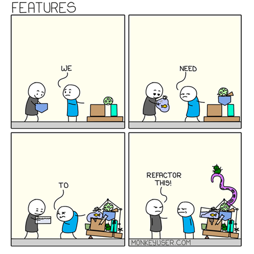

Refactoring Golden rules
TLDR
- Refactoring means improving your code without changing what it does.
- Your aim is to make the code more readable, more maintainable, more reusable, and more efficient.
- If you don't refactor your code, it can become increasingly more difficult and time-consuming to maintain over time.
- In this article you will learn golden rules on what good code looks like, and examples of "code smells" which indicate when code might need refactoring.
Pre-requisites
| Pre-requisite | Importance | Note |
|---|---|---|
| Coding Best Practice | Helpful | Some basic coding skills will help |
Refactoring is the art of rewriting your code in a way that improves it, without changing what it does.
In RAP terms, that means improving our code without changing the output of the pipeline.
Why refactor?
Why would you bother re-writing existing code? If it works, it works, right?
In the coding world, getting something to work is often considered just the first step in the development process. Then we make it better, and faster. Here’s why:
- Readability: we spend more time reading code than writing it, so make it easy to read
- Easier to modify and test: well written, modular code is easier to modify and easier to write tests for, saving time in future development efforts
- Quicker on-boarding: when code it well-written, new team members will get up to speed more quickly
- Improve performance: finding ways to make our code run faster and use less computing resource (e.g., memory, disk space)
- Save the NHS money: cloud computing is charged on a pay-as-you-go basis – efficient code is cheaper
- Switch platforms: in RAP we aim to move from proprietary platforms to open-source tools

Image source: Monkey User
Refactoring Golden Rules
Whole books have been written on refactoring, so we can’t cover everything here. However, here are some refactoring “golden rules” that should serve you well.
Some of these are python specific, but most are universal no matter what language you’re using.
Filter and select early
When you read data from CSV files or database tables, be sure to take only the rows and columns that you need. Superfluous rows and columns will slow down your processing.
Don’t Repeat Yourself (DRY)
If you have the same code pattern repeated in multiple places, extract it into a function. Then simply call the function in the places where the repeated code used to be.
This way, if you need to change this bit of code, you only need to change it in one place.
Modularise your code
Going further, even parts of your code that are only used once can be wrapped into functions! This has several advantages:
- It is easier to test
- It helps you organise your code, as related functions can be grouped into files or moved into classes
- You can reuse your code in other projects more easily
Avoid long files
Once you've got your code into functions and grouped into files, check that they are not too long.
How long is "too long", is a bit subjective. Pylint recommend 1000 lines, which is OK as a starting point but sometimes you won't be able to avoid going longer, and that's OK.
But when your files start to reach this length, see if the content might be better organised if it were broken into separate files.
Improve your functions
Functions should:
- Do one thing aka have a “single responsibility”
- Be small
- Small functions are easier to test and maintain.
- Have as few parameters as possible
- Functions with lots of parameters are harder to understand and exponentially harder to test.
If your functions don’t meet these criteria, see if you can split them up.
To help others understand your functions, you should also:
- Add docstrings
- Add type hints
Use loose coupling where possible
Tight coupling means that different components depend on each other, such that a change in one will often mean you need to make a change somewhere else. This can make it slower and more difficult to make changes to your code, and makes your code less reusable.
Loose coupling means that the different functions, modules, and components can work essentially independently of each other.
For example, say you have two functions.
get_patient_data()gets patient data from a database and stores it in a dataframe.rename_patient_data()takes that dataframe, renames some columns, and returns it.
These functions are tightly coupled because rename_patient_data() will only work on the dataframe created by get_patient_data().
But imagine you had another function called rename_df_columns(), which takes a dataframe and a dictionary mapping old to new column names.
This is more flexible - you could use this on any dataframe, not just your patient data one. You could use it in other projects, and other teams could use it in their projects! That's loose coupling.
Of course in the real world, sometimes things do have to be tightly coupled. That's OK! Just decouple where you can.
Organise your code
In an analytical pipeline, you’ll typically have an entry point file to run the pipeline, e.g., create_publication.py. Store all your functions in separate files, and organise similar functions into in the same folders/files/classes.
We find that four folders will cover most bases:
- data_in
- data_processing
- data_out
- utils
There's no need to start from scratch either - we have a Package Template you can use that follows this structure.
Improve your variable and function names
Variable names should indicate what the variable is. Function names should indicate what the function does. A good rule of thumb is to start variable names with nouns and function names with verbs.
| Not so good | Better |
|---|---|
df1 |
df_gp_code |
df2 |
df_patient_data |
df3 |
df_patient_data_with_gp_code |
value |
prescription_value |
import() |
import_csv_to_df() |
month_list() |
get_month_list() |
Look up the general naming conventions within the language you're using. For example in python, it's conventional to use:
snake_caserather thancamelCasefor functions and variables- Capitalised class names, e.g.
class DatabaseConnection() ALL_CAPSfor global variables and constants
Keep variables in their own scope
Define variables within the scope that they will be used (e.g., in the relevant function, class, or module). If there are global variables needed throughout the code, group them into a config/params dictionary so you know where they are defined.
Minimise nesting
Code with multiple nested levels is hard to read. Try using guard clauses in functions, which will return early if a given condition is met. For example the below function:
def can_drink_alcohol(age, country):
if age is not None:
if age < 18:
can_drink = False
elif age < 21:
if country == "United States":
can_drink = False
elif country == "United Kingdom":
can_drink = True
else:
can_drink = True
else:
can_drink = False
return can_drink
...could become...
def can_drink_alcohol(age, country):
if age == None:
return False
if age < 18:
return False
if age < 21 and country == "United States":
return False
return True
Extract complex expressions into variables
If you have a complex expression (perhaps a complex join clause), extract it into a variable with a descriptive name explaining what it does.
Use a linter
A linter is a tool that will scan your code for errors and give you formatting suggestions. Linters give you a quick and easy way to ensure consistent formatting across your project, and some can even reformat all your files for you automatically!
If you're using an editor like VS Code you'll be able to install linters as extensions, but you can also install and run them via the command line.
Popular linters include black and pylint for Python and lintr for R.
Code smells
A "code smell" is an indication that something is "off" in your code. It's a surface indication of what may be a deeper problem, especially if not resolved.
If you don't fix issues with your code early, then when you add more code to your project you'll be building on a poor foundation. A bad code smell can soon become rotten!
Here are a few examples of code smells, and which of the refactoring rules you can employ to fix them:
- Seeing the same sorts of code / patterns multiple times (wrap into functions)
- Long functions with multiple arguments (break into multiple functions)
- Very long python files (break into multiple files)
- Constantly passing a lot of stuff between functions (might mean you need a class)
- Difficult to know where the code "starts" (you need a clear "main" file - entrypoint)
- I've got no idea what this function does (add doc strings)
- I've got no idea what this variable holds (improve naming conventions)
- The number of
ifstatements in this function is giving me a headache (reduce nesting)
Your turn
Thinking about your pipelines, did any of the above rules jump out to you as something you could implement? If so, why not try refactoring your code and putting these into practice?
If you have any other refactoring golden rules that we haven't covered here, do get in touch and let us know!
External Links Disclaimer
NHS England makes every effort to ensure that external links are accurate, up to date and relevant, however we cannot take responsibility for pages maintained by external providers.
NHS England is not affiliated with any of the websites or companies in the links to external websites.
If you come across any external links that do not work, we would be grateful if you could report them by raising an issue on our RAP Community of Practice GitHub.